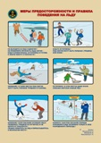
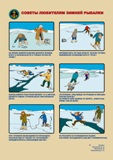
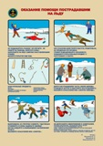
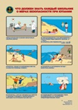
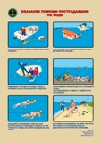
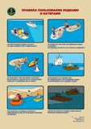
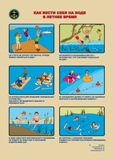

Муниципальное бюджетное общеобразовательное учреждение "Средняя школа № 3 имени А.Н. Першиной" г. Енисейска Красноярского края
|
Меню сайта
Категории раздела
Полезные ссылки на официальные порталы!
Статистика
Онлайн всего: 1 Гостей: 1 Пользователей: 0 |
Ваша безопасностьУголок гражданской защиты: Внимание всем!!! Памятки по профилактике терроризма и экстремизма "Террористический акт" Памятка по профилактике экстремизма в подростковой среде Памятка "Терроризм - угроза обществу" Памятка родителям по профилактике экстремизма План-конспект проведения классного часа "Современный терроризм и его проявления"
Памятка по профилактике экстремизма для учащихся основной школыПрофилактика экстремизмаЭкстремизм – это сложная и неоднородная форма выражения ненависти и вражды. Различают следующие виды экстремизма: · политический · национальный · религиозный Национальный экстремизм выступает под лозунгами защиты «своего народа», его экономических интересов, культурных ценностей, как правило, в ущерб представителей других национальностей, проживающих на этой же территории. Под религиозным экстремизмом понимают нетерпимость по отношению к инакомыслящим представителям той же или другой религий. В последние годы обострилась проблема исламского экстремизма. Политический экстремизм – это движения или течения против существующего конституционного строя.На сегодняшний день экстремизм является реальной угрозой национальной безопасности Российской Федерации. Наблюдается увеличение неформальных молодежных движений экстремистской направленности. В настоящее время членами неформальных молодежных организаций (группировок) экстремистско-националистической направленности являются молодые люди в возрасте от 14 до 30 лет, нередко - несовершеннолетние лица 14 – 18 лет. Преступления экстремистской направленности К преступлениям экстремистской направленности относятся: публичные призывы к осуществлению экстремистской деятельности; возбуждение ненависти или вражды, а равно унижение человеческого достоинства, организация экстремистского сообщества и т.д. Проявления экстремистской деятельности
Серия памяток "Ваша безопасность" "Бытовой газ" "Землетрясение" "Лесной пожар" "Массовые (спортивные) мероприятия" "Наводнение" "Общественный транспорт" "Сигналы оповещения" "Сильный ветер в городе" Детям - безопасную дорогу! Паспорт дорожной безопасности МБОУ СШ №3 Паспорт дорожной безопасности тит.лист        «О
мерах безопасности при сходе снега и падении сосулек с крыш зданий» Помните:
чаще всего сосульки образуются над водостоками, поэтому эти места фасадов
зданий бывают особенно опасны. Их необходимо обходить стороной. Соблюдайте осторожность и, по возможности, не
подходите близко к стенам зданий. Если во время движения по тротуару вы
услышали наверху подозрительный шум – нельзя останавливаться, поднимать голову
и рассматривать, что там случилось. Возможно, это сход снега или ледяной глыбы.
Бежать от здания тоже нельзя. Нужно как можно быстрее прижаться к стене,
козырек крыши послужит укрытием. Правила,
соблюдение которых поможет избежать травмирования: 1. Воздержаться в данный период времени от
нахождения вблизи зданий с нависшими на крышах массами снега. 2. Обходить участки местности, обозначенные
предупредительными табличками: «Опасная зона», «Возможен сход снежной массы»,
«Проход запрещён». Если
в прогнозе погоды дается сообщение о гололеде или гололедице, примите меры для
снижения вероятности получения травмы: 1. Подготовьте малоскользящую обувь. 2. Прикрепите на каблуки металлические
набойки или поролон, а на сухую подошву наклейте лейкопластырь или изоляционную
ленту, можете натереть подошвы песком (наждачной бумагой). 3. Передвигайтесь осторожно, не торопясь,
наступая на всю подошву. 4. Если Вы поскользнулись, присядьте, чтобы
снизить высоту падения. В момент падения постарайтесь сгруппироваться, и,
перекатившись, смягчить удар о землю. Пожарная безопасность Газета "Вулкан" (декабрь 2016) Газета "Вулкан" (январь 2017) Газета "Вулкан" (февраль 2017) Газета "Вулкан" (март 2017) Безопасность в сети Интернет Программа обучения детей и подростков правилам безопасного поведения в Интернет - пространстве, профилактике Интернет - зависимости, предупреждения рисков вовлечения в противоправную деятельность Электробезопасность Антитеррористическая безопасность Памятка "Куда звонить при обнаружении подозрительных предметов" Памятка "Вы нашли подозрительный предмет. Что делать? |
Данные школы
Муниципальное бюджетное общеобразовательное учреждение
"Средняя школа № 3 имени А.Н. Першиной"
г.Енисейска Красноярского края
ОГРН 1022401273498
ИНН 2447004263
КПП 2440701001
г. Енисейск, ул. Ленина, 102 Навигатор ДО
Вакансии учителей в общеобразовательных организациях Красноярского края по состоянию на 20 августа 2017 года по данным муниципальных образований края 76-летие Победы
«Большая перемена»
400 лет енисейску
Гос услуги
Социальные видеоролики
Поиск
Музей - онлайн
Год памяти и славы
Друзья сайта
|
|
{kind=link}
{kind=link}
{kind=link}
{kind=link}
{kind=link}
{kind=link}
{kind=link}